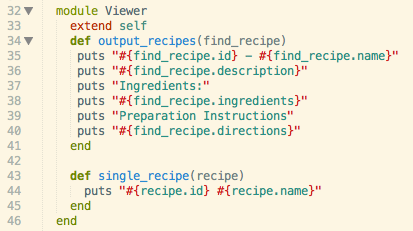

MVC
Whenever you hear MVC you think Rails in the context of learning Ruby. So far I haven't had a chance to work with Rails at DBC, but I've been learning MVC. As I've experiemented with MVC, I've noticed that it's easier for me to start with the Model, then Controller, and then View. Let's walk through each below.
Model
The model is a class. Models in Ruby are things should communicate with each other.Models should try to only contain objects. Take a look at this image below.

Controller
The controller is how your models talk to the view. It is basically your driver test code.Controllers should have an instance of a model class and use the model methods to manipulate the stored objects within each model method.
Now if you want to do stuff, you should be able to use the controller!
View
I created the view as a module and used extend self to use its methods as class methods. You can think of the view as the puts in your driver code. In this example, I passed in an object into the controller by isolating the objects in the model class.
